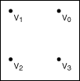
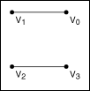
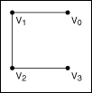
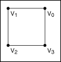
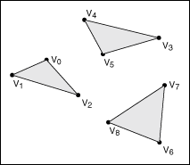
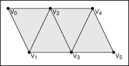
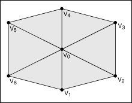
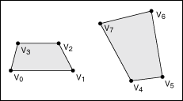
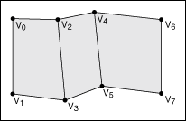
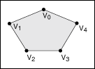

The objects that appear in a 3D scene are graphical representations of physical objects. A 3D object is a set of vertices that exist in 3D space and the connections made, or not made, between those vertices. The Geometries VIs such as Create Box and Create Sphere define the representation of simple geometric objects for you. If you want to create an object that is more geometrically complex, or if you want to define specific values for the vertices, normals, indices, colors, and texture mapping that define the appearance of a 3D object, you can configure a mesh.
|
Note��Using meshes is an advanced 3D graphics design technique. Prior experience with designing 3D graphics may help you use this feature. |
A mesh is a collection of attributes that, when combined in a specific way, create a 3D surface. The attributes of a mesh include vertices, normals, colors, texture coordinates and the points, lines, triangles, or polygons that delineate or connect the vertices. When you define a mesh, you define arrays of values that represent the vertices, normals, colors, and texture coordinates of the mesh. You also define an array of indices that determines where in the mesh to apply the values from each array. Finally, you define binding modes for the values in each of the arrays. To understand meshes, you must be familiar with the following terms:
In LabVIEW, you can use the Create Mesh VI to create a reference to a new mesh. You then can use the SceneMesh properties and methods to configure the mesh programmatically. The following section provides additional information about the attributes of a mesh.
The draw mode you select for a mesh specifies the way in which you want to draw or connect the vertices of the mesh. You can select from the following draw modes.
Draws a point over each vertex. This mode does not connect the separate vertices, but the points appear in 3D space.

Draws non-contiguous line segments between pairs of vertices. For example, LabVIEW draws a mesh with four vertices with two lines: V0V1 and V2V3. If the total number of vertices is odd, LabVIEW ignores the final vertex.

Draws contiguous line segments between the vertices, starting at V0 and ending at Vn � 1, where n is the total number of vertices. This mode connects all the vertices but does not create a closed polygon.

Draws contiguous line segments between the vertices, starting and ending at V0. This mode creates a closed polygon, but does not fill the space enclosed by the line segments.

Draws a series of non-contiguous triangles that connect the vertices in groups of three, and fills the space enclosed by each triangle. For example, LabVIEW draws a mesh with six vertices with two triangles: V0V1V2 and V3V4V5. This mode does not connect the triangles to each other. If the total number of vertices is not an exact multiple of three, LabVIEW ignores the final one or two vertices.

Draws a series of contiguous, filled triangles. LabVIEW connects the vertices so that the orientation of the triangles forms a solid strip, creating a portion of the object surface. For example, the first triangle connects the vertices V0V1V2, the second triangle connects the vertices V2V1V3, the third triangle connects the vertices V2V3V4, and so on.

Draws a series of contiguous, filled triangles. The first vertex of each triangle is the same, and LabVIEW increments the second and third vertices by one for each subsequent triangle. This causes the triangles to create a fan around the central point of V0. For example, the first triangle connects V0V1V2, the second triangle connects V0V2V3, and so on.

Draws a series of non-contiguous quadrilateral polygons that connect the vertices in groups of four, and fills the space enclosed by each quadrilateral. For example, LabVIEW draws a mesh with eight vertices with two quadrilaterals: V0V1V2V3 and V4V5V6V7. If the total number of vertices is not an exact multiple of four, LabVIEW ignores the final one, two, or three vertices.

Draws a series of contiguous quadrilateral polygons, and fills the space enclosed by each quadrilateral. For example, LabVIEW draws a mesh with eight vertices with three quadrilaterals: V0V1V3V2, V2V3V5V4, and V4V5V7V6. If the total number of vertices is odd, LabVIEW ignores the last vertex.

Draws a single, filled polygon to connect all the vertices, starting at V0 and ending at Vn � 1, where n is the total number of vertices. The total number of vertices must be at least three, or LabVIEW does not draw anything. Also, the polygon cannot intersect itself.

The vertex array of a mesh defines the locations of each of the vertices in the mesh. Each element of the array represents one vertex in the mesh. LabVIEW indexes the array according to the values you specify in the Indices array. The vertex array is an array of clusters, where each cluster contains the x, y, and z values that define the position of one vertex in 3D space.
Indices is an array of integers that define how LabVIEW indexes the various arrays that create the mesh. For example, if the element at position 3 of the indices array is 0, then the elements at position 3 of the color array, vertex array, normal array, and texture coordinate array are all indexed to 0. Use the indices array to change the appearance of the mesh by changing the indices of the elements of four different arrays without changing the order of the elements in those arrays individually.
The color binding mode you select for a mesh determines the way in which LabVIEW binds the elements of the color array to the mesh. You can select from the following color binding modes:
The color array of a mesh defines the RGBA color values to apply at each index of the indices array. The color binding mode you specify determines how LabVIEW applies the colors in this array. The color array is an array of clusters, where each cluster contains the red, green, blue, and alpha values that define one color.
The normal binding mode you select determines how LabVIEW binds the elements of the normal array to the mesh. The normal binding mode determines how light reflects off the surface of the mesh. You can select from the following normal binding modes:
The normal array of a mesh defines the origin of each normal in the mesh. Each element of the array represents one normal in the mesh. The normal binding mode you specify determines how LabVIEW applies the normals in this array. The normal array is an array of clusters, where each cluster contains the x, y, and z values that define the origin of one normal.
The texture coordinate array of a mesh defines how a texture maps to the surface of the mesh. Each element of the array represents one texture coordinate. You must define a texture coordinate for each vertex of the mesh. The texture coordinate array is an array of clusters, where each cluster contains the s and t values that define one coordinate in the texture. If you do not enable texturing, LabVIEW ignores this array. Use the SceneObject property Specials:Texturing to enable texturing on an object in a 3D scene.
Refer to the Using Meshes VI in the labview\examples\Graphics and Sound\3D Picture Control directory for examples of how changing the attributes of a mesh affects the appearance of the mesh.
 Open example�
Open example�
 Find related examples
Find related examples